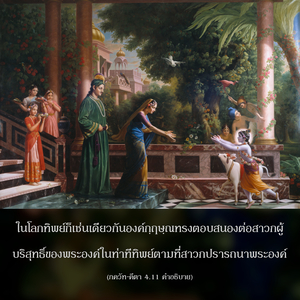

ดั่งที่ทุกคนศิโรราบต่อข้า ข้าให้รางวัลไปตามระดับแห่งการศิโรราบ ทุกๆคนปฏิบัติตามวิถีทางของข้าด้วยประการทั้งปวง โอ้ โอรสพระนาง ปฺฤถา

ทุกคนกำลังเสาะแสวงหาองค์กฺฤษฺณในมุมมองต่างๆ แห่งปรากฏการณ์ของพระองค์ องค์กฺฤษฺณ บุคลิกภาพสูงสุดแห่งพระเจ้า ทรงรู้แจ้งได้เพียงบางส่วนในรัศมี พฺรหฺม-โชฺยติรฺ อันไร้รูปลักษณ์ของพระองค์ และทรงเป็นอภิวิญญาณที่แผ่กระจายไปทั่ว และทรงประทับอยู่ภายในทุกสิ่งทุกอย่าง รวมทั้งภายในละอองปรมาณู แต่สาวกผู้บริสุทธิ์ขององค์กฺฤษฺณเท่านั้นที่จะรู้แจ้งถึงพระองค์อย่างสมบูรณ์บริบูรณ์ ดังนั้น องค์กฺฤษฺณจึงทรงเป็นจุดมุ่งหมายสำหรับทุกคนเพื่อความรู้แจ้ง และทุกๆ คนจะได้รับความพึงพอใจตามที่ตนปรารถนาที่จะมีพระองค์ ในโลกทิพย์ก็เช่นเดียวกัน องค์กฺฤษฺณทรงตอบสนองต่อสาวกผู้บริสุทธิ์ของพระองค์ในท่าทีทิพย์ตามที่สาวกปรารถนาพระองค์ สาวกรูปหนึ่งอาจปรารถนาให้องค์กฺฤษฺณทรงเป็นพระอาจารย์สูงสุด สาวกอีกรูปหนึ่งอาจปรารถนาให้องค์กฺฤษฺณเป็นเพื่อนสนิทของตน สาวกอีกรูปหนึ่งอาจปรารถนาให้องค์กฺฤษฺณเป็นบุตร และสาวกอีกรูปหนึ่งอาจปรารถนาองค์กฺฤษฺณให้เป็นคู่รัก องค์กฺฤษฺณทรงประทานรางวัลแก่สาวกทั้งหลายอย่างเสมอภาค ตามความแรงกล้าแห่งความรักที่แตกต่างกันของสาวกที่มีต่อพระองค์ในโลกวัตถุ ความรู้สึกในการสนองตอบเช่นเดียวกันนี้ก็มีอยู่ และการสนองตอบเช่นนี้องค์ภควานฺทรงแลกเปลี่ยนกับผู้บูชาที่แตกต่างกันอย่างเสมอภาค สาวกผู้บริสุทธิ์ทั้งในโลกนี้ และในโลกทิพย์คบหาสมาคมกับองค์กฺฤษฺณเป็นการส่วนตัว และสามารถปฏิบัติตนรับใช้พระองค์เป็นการส่วนตัว จึงได้รับความปลื้มปีติสุขทิพย์ในการรับใช้ด้วยความรักต่อพระองค์ สำหรับ มายาวาที และผู้ที่ต้องการฆ่าชีวิตทิพย์ของตนเองด้วยการทำลายปัจเจกบุคคลของสิ่งมีชีวิต องค์กฺฤษฺณก็ทรงช่วยเช่นกัน ด้วยการดูดพวกเขาให้ไปอยู่ในรัศมีของพระองค์ พวก มายาวาที ไม่ยอมรับองค์ภควานฺผู้เป็นอมตะ และมีแต่ความสุขเกษมสำราญ ดังนั้น จึงไม่สามารถรับรสแห่งความปลื้มปีติในการรับใช้ทิพย์ต่อพระองค์เป็นการส่วนตัว หลังจากที่ได้ดับขันธ์ปัจเจกบุคลิกภาพของตนเองบางคนที่ยังไม่สถิตใน มายาวาที อย่างมั่นคงจะกลับมาในสนามวัตถุนี้ ทำกิจกรรมต่างๆ เพื่อแสดงออกถึงความปรารถนาที่ซ่อนเร้นอยู่ภายใน พวกนี้ไม่ได้รับการยอมรับให้ไปอยู่ในโลกทิพย์ แต่จะได้รับโอกาสให้มาปฏิบัติอยู่ในโลกวัตถุอีกครั้งหนึ่ง สำหรับผู้ทำงานเพื่อหวังผลทางวัตถุ องค์ภควานฺทรงประทานผลที่พวกเขาปรารถนาตามหน้าที่ที่กำหนดไว้ในฐานะ ยชฺเญศฺวร และพวกโยคีผู้ปรารถนาอิทธิฤทธิ์ องค์ภควานฺทรงประทานอิทธิฤทธิ์นั้นให้ อีกนัยหนึ่ง ความสำเร็จของทุกคนขึ้นอยู่กับพระเมตตาขององค์ภควานฺเท่านั้น ขบวนการในวิถีทิพย์ทั้งหมดคือระดับแห่งความสำเร็จที่แตกต่างกันบนเส้นทางเดียวกัน ดังนั้น นอกเสียจากว่าเราจะไปถึงจุดสมบูรณ์สูงสุดแห่งกฺฤษฺณจิตสำนึก ความพยายามอื่นๆ ทั้งหมดถือว่าไม่สมบูรณ์ ดังที่ได้กล่าวไว้ใน ศฺรีมทฺ-ภาควตมฺ (2.3.10) ว่า
อกามห์ สรฺว-กาโม วา
โมกฺษ-กาม อุทาร-ธีห์
ตีเวฺรณ ภกฺติ-โยเคน
ยเชต ปุรุษํ ปรมฺ
“ไม่ว่าเราจะเป็นผู้ที่ไม่มีความปรารถนา (สภาวะของสาวก) หรือปรารถนาผลทางวัตถุทั้งหมด หรือปรารถนาความหลุดพ้นด้วยความพยายามทั้งปวง เราควรบูชาองค์ภควานฺเพื่อความบริบูรณ์ และมาถึงซึ่งจุดสมบูรณ์สูงสุดที่กฺฤษฺณจิตสำนึก”